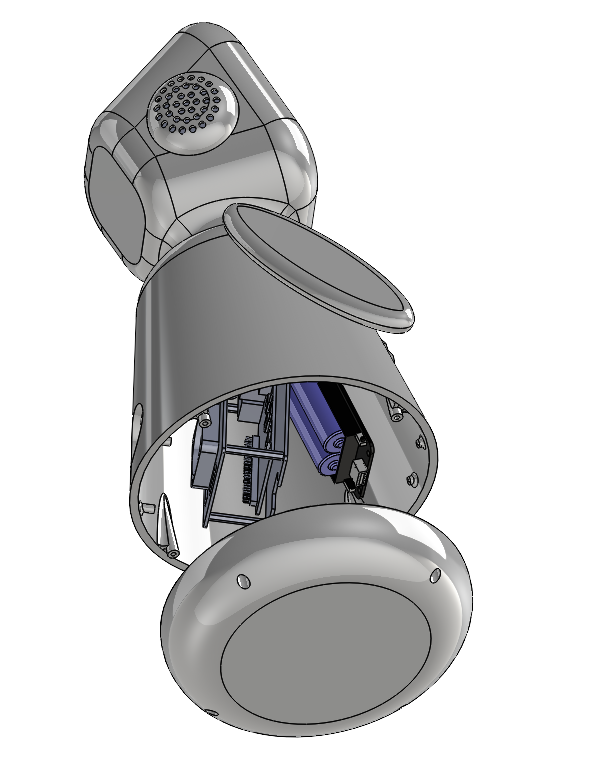
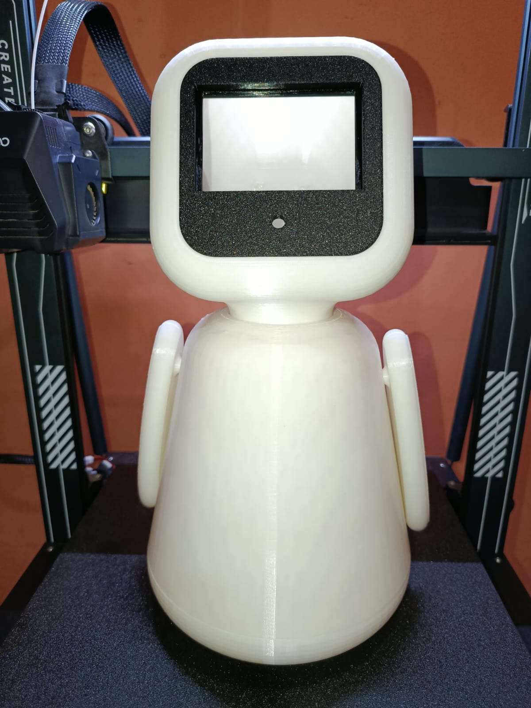

Accueil des visiteurs
Saluer et recueillir la demande dans plusieurs langues.
Robot Réceptionniste Intelligent — Capgemini Engineering Innovathon 2026

Faites glisser le modèle pour le faire pivoter et utilisez les commandes pour zoomer.
L’archive contient l’assemblage SolidWorks (.SLDASM) et les fichiers de pièces STL disponibles. Aucun export STEP n’était présent dans les fichiers source.
RECA (Robot Réceptionniste Intelligent) est un concept de robot d’accueil autonome imaginé pour fluidifier l’arrivée des visiteurs. Le projet vise à combiner accueil vocal multilingue, consultation des rendez-vous, notification des collaborateurs et guidage vers les espaces d’attente, avec un traitement de l’IA effectué localement.
Cette approche cherche à proposer une interaction disponible et cohérente tout en limitant la dépendance aux services cloud. Les fonctions présentées ici décrivent l’architecture et les objectifs du projet, et non une validation de chaque fonction en conditions réelles.
Les capteurs de proximité détectent une présence ; le robot initie le dialogue et propose une interaction vocale.
La reconnaissance vocale hors ligne est prévue pour comprendre la demande et échanger en français, en arabe ou en anglais.
Le scénario prévoit la consultation locale des informations de rendez-vous puis la notification du collaborateur attendu.
La navigation autonome envisagée guide le visiteur vers la zone d’attente ou le point de rencontre.
La proposition associe calcul embarqué, perception, navigation et services applicatifs dans une architecture modulaire.
Raspberry Pi 5, accélérateur AI HAT+ Hailo-8L, LiDAR RPLIDAR A1M8 et caméra 3D Intel RealSense D415.
ROS 2 Humble, Nav2, SLAM Toolbox, SMACH, YOLOv8/ByteTrack et capteurs HC-SR04.
Whisper.cpp hors ligne, synthèse vocale multilingue, tableau de bord Web et base locale SQLite.
La conception CAO présente un robot compact composé d’une tête avec interface, d’un corps central et d’une base mobile intégrant les éléments mécaniques et électroniques.

Photographie du prototype physique fourni avec les ressources du projet.